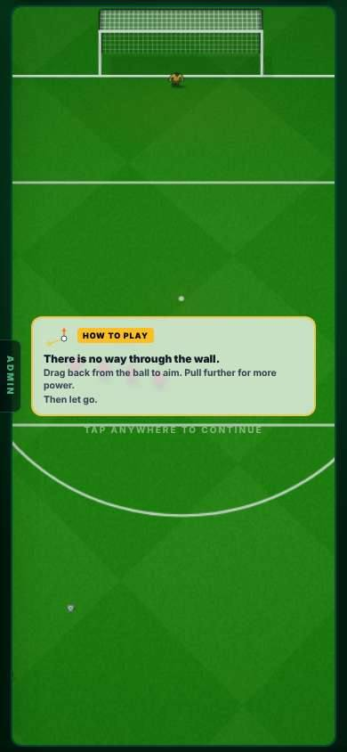

19 OCT · PLAY SCREENS
Every football screen draws the pitch at the real match’s size, play buttons stay on screen, and the engine warning is red.
Merged to main on 20 Oct (PR #744); live with the main deploy. Not checked on the live site from here. The match engine file is unchanged (two comments only).
19 Oct 2026. Admin → Patch notes: v0.62.
CHECK THESE
FIXED
You said: “The game has definitely drifted when I press Play.” 8 screens drew the pitch narrower than the real match (366 px on a phone, 384 px on a computer).
Each page’s padding squeezed the play box. Kick strength was never off: every screen already read your drag against the real match. Only the pitch and players were drawn smaller.
The shared play box now steps into the page’s side margins by the missing amount, with no sideways scroll. Also: the training card lost its 10 px padding, the Real goals card no longer clips the match’s edges, and the trial’s pitch frame border is a ring now (it ate 4 px).
Pitch width in px on a 390 px phone. Grey is before, colour is after. The real match is 366 px.
The computer sizes (3 screens changed)
Pitch width in px on a computer. The real match is 384 px. The other screens were already 384.
On Infinite Highlights and Full match, NEXT and the chance name sat below the fold.
The page was taller than a phone screen.
Now pinned on screen at 390×844 and 1440×900. House rule: play controls never sit below the fold.



ADDED
You said: “a lot of times I’m just clicking Allow, allow, allow, and that’s how these things happen.”
The old notice covered only the match engine file, and was easy to click past. The play screens drifted through other files.
When a Claude session is about to edit the match engine, or any file that decides what a play screen hands the engine, the Allow box now shows a red notice and asks every time. It never blocks: you can press No.
It changes the physics every match runs on.
Press Allow only if someone asked for this in words. Otherwise press No.
A drawing of the Allow box, in the real words. The other notice reads “SOMETHING MAY DRIFT FROM THE REAL MATCH”.
Which files ask
- The engine itself: canvasEngine.
- Drift files: CanvasMatch, EnginePlay, ScenarioPlay, InfiniteMatch, hiddenMatch, engineProfile, playArea, scenePicture, matchView.
- On 20 Oct a Python script that edited the engine slipped past once. The check now also catches quoted file paths in scripts.
You said: “work to fix any drifts across the game”. A drift is anything the engine is given that differs from the real career match.
Not in the report.
Every screen was measured at 390 and 1440 px, with scripts reading the real match’s settings off each canvas. No drift in keeper strength, squads, weather, fatigue or camera framing, beyond a few named test dials. Full table: docs/handoffs/2026-10-19-ui-lookover/drift-audit.md.
Left as designed, not drift
- Highlights and Gallery Play are 493 px wide on a computer on purpose. The drag is set so a kick is the same.
- Goal videos force the keeper to 25 and clear weather so goals get scored and recorded.
- Real goals force the keeper to 80 and give the real goal’s own framing.
You asked that anything using a mouse on a computer work instantly with a finger.
Not in the report.
27 things found: 0 stop a finger in the real game. 2 stop a finger on the website. Fixes are in B1 (see its page).
The one wrong one in the game: the − and + offer buttons in contract talks. One tap could move the offer twice.
NEXT
The other Full match layout (“TV broadcast”), the 3D and radar views of the 90-minute test, the gallery’s 5-a-side and Tuning tabs, the “Ours vs real” tab.
They mount the same play box or no match, so no new drift was expected.
Not measured. Also not measured: a real iPhone (sizes are layout numbers, not feel).
VIDEOS
SEEN / NOT SEEN
Seen on a screen
- Pitch widths on 15 screens at 390 and 1440 px (layout measurements in Chromium)
- The buttons staying on screen on three screens
Measured (numbers)
- tsc clean; the one-engine guard clean; the finishing, aiming, outcomes and oneEngine tests pass
Reasoned, not seen
- The touch check: read from the code, not played
- The red warning is shown as a drawing: it appears in the Allow box inside a Claude session
Not seen / not done
- How a kick feels after the size fix